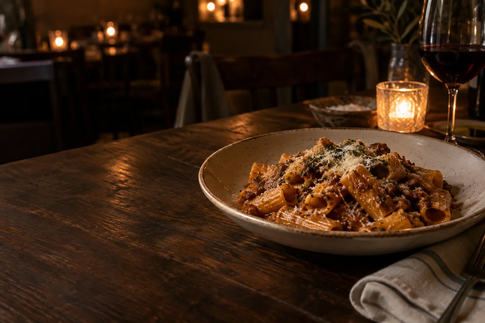

Know what to order before you get in line.
Set a meal target, find nearby dishes, and see the exact order that fits. DineSense keeps published nutrition and estimates clearly labeled.
An invite-only pilot for iPhone, on iOS 26.

Illustrative app preview
Pappardelle with braised short rib
Estimated calories · illustrative
About 730 calories
ProteinAbout 34g
CarbsAbout 72g
FatAbout 33g
Example target · illustrative
750 calories
A target for this meal
01Set your meal target
Use calories and macros, or choose a simple goal.
02Find a nearby order
See dishes ranked for that meal and what to ask for.
03Check the source
See where the numbers came from before you pick.
Your target meets a real menu.
Find helps turn a meal target into an order you can make at a restaurant.
- 01
Before the menu
Choose your aim.
Set calories and macros for this meal, or start with a simpler food goal.
- 02
At the restaurant
See what fits nearby.
Compare dishes, inspect nutrition sources, and see suggested changes where published ingredient figures support them.
- 03
When you decide
Keep the order.
Save it for next time or record your pick. Apple Health is optional.
Nutrition, with its source in view.
Published figures are labeled as published. Web estimates, menu photos, and numbers you enter are identified separately. Where a valid HTTPS source is available, the order ticket links to it.
Values shown here are illustrative examples, not restaurant data or nutrition advice.
Example menu valuesIllustrative only
PublishedRestaurant-provided value
720 caloriesEstimatedApproximate point, not a measured range
About 730 calories
Choose with the menu in view.
DineSense is preparing a small iPhone TestFlight pilot. Find and order with a meal target, keep favorites, and tell us when a menu figure looks wrong.
iPhone pilot